load("mnist.mat"); for d=0:9 digits = digits_train(:, :, labels_train==d); % choose all images with digit d digits = reshape(im2double(digits), [784 size(digits, 3)]); % reshape this data into a 784xN matrix, where N is the number of images % with digit d % Every column is a sample digit d (that is our samples are stacked % column wise in the matrix) mean_vector = sum(digits, 2)/size(digits, 2); % mean is found by summing the column vectors digits = digits - mean_vector; % mean subtraction (needed for covariance) [bases, diagonal] = highest_dimensions(digits, 84); % the function will give the 84 eigenvectors of the covariance matrix % that have the highest eigenvalues % Note that bases are column vectors which have been stacked column wise % in the bases matrix % diagonal is a diagonal matrix (84x84) whose diagonal values are the % corresponding eigenvalues reduced_data = bases'*digits; % in form of coefficients along bases % the above vectorised implementation gives us the compressed data. % This is because after multiplying as above the value of R_{ij} where R % is the reduced data matrix, is the inner product of the ith % eigenvector with the jth sample (the jth column in digits). % Thus in reduced data the jth column contains the 84 inner products of % the jth sample with the eigenvectors which is our compressed % represnation. reconstructed = bases*reduced_data; % To reconstruct we multiply by bases (explained in the report) % Essentially this would ensure that the jth column in reconstructed is % the linear combination of the bases with coefficietnts = inner products % with the jth sample. % Plot below. We reshape the images after adding back the mean vector % and then plot figure; axis equal; subplot(1, 2, 1); imagesc(reshape(mean_vector + digits(:, 2), [28 28])); title(["Original Image for Digit " num2str(d)]); subplot(1, 2, 2); imagesc(reshape(mean_vector + reconstructed(:, 2), [28 28])); title(["Reconstructed Image for Digit " num2str(d)]); end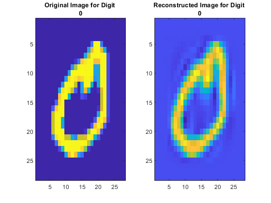 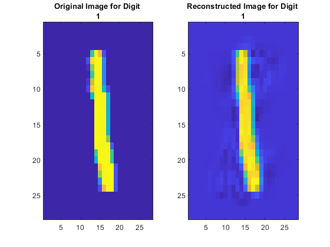 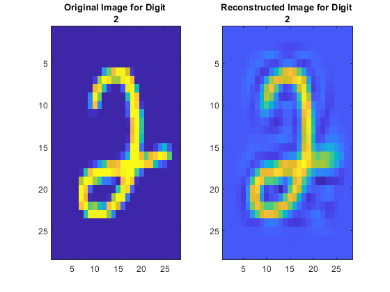 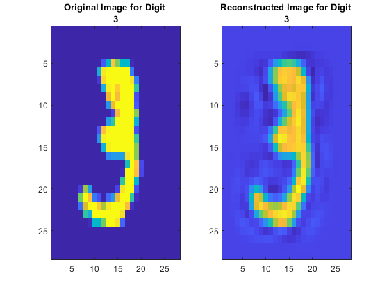 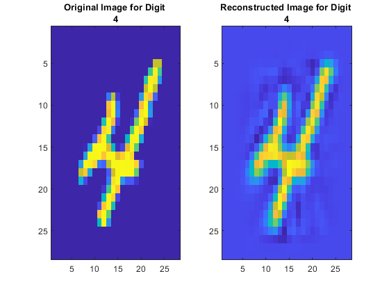 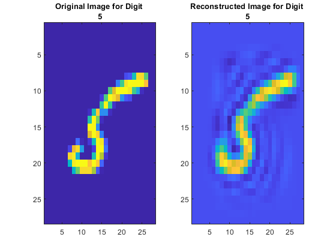
 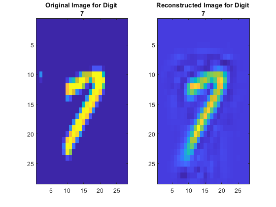 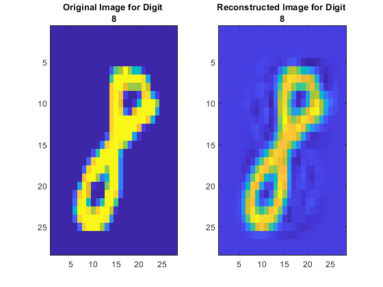 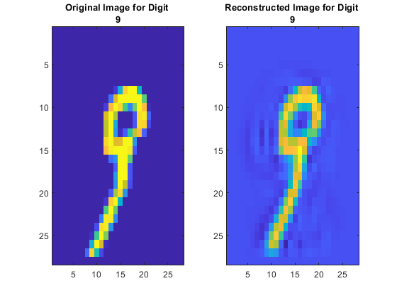
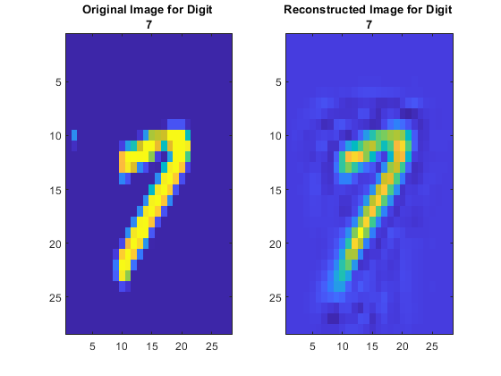 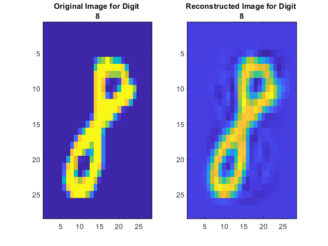 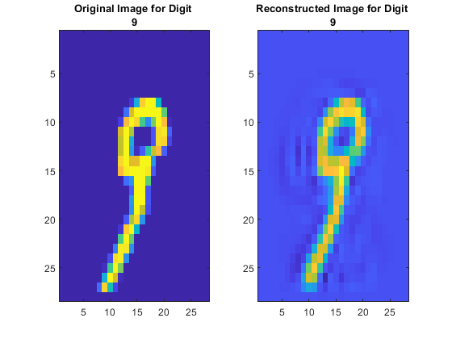